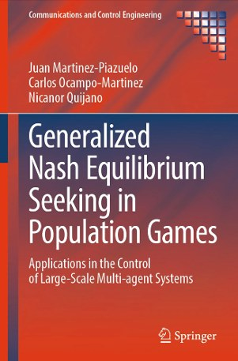
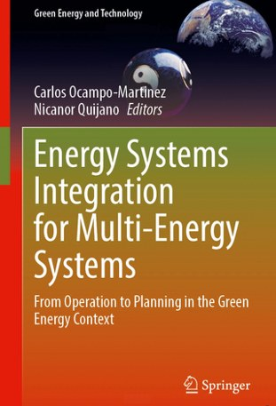
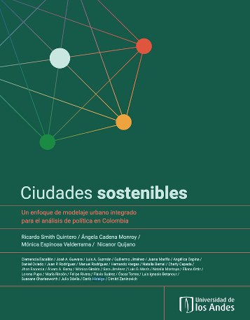

About
Control and automation researcher with close to twenty years of faculty experience, working on hierarchical and distributed optimization and control for large-scale multi-agent systems, using learning, bio-inspired, and game-theoretical techniques. The methods are developed with, and validated on, automation problems in energy systems and microgrids, water distribution and urban drainage, open-channel irrigation and smart agriculture, bioprocess and manufacturing scheduling, multi-robot and UAV coordination, and transportation.
Education
Academic appointments
Awards and honors
- European Systems & Control Ph.D. Thesis Award, 2025 — awarded to Juan Martínez-Piazuelo, co-advised with Prof. C. Ocampo-Martínez, for the thesis On the Design of Optimization-Based Controllers via Generalized Nash Equilibrium Seeking in Evolutionary Games over Networks.
- Alain Gauthier Award, 2025 — IEEE Control Systems Society, Colombia.
- Experienced Research Award, 2021 — School of Engineering, Universidad de los Andes.
- ISA Transactions Best Paper Award, 2018 — for Dynamical Tuning for MPC Using Population Games: A Water Supply Network Application.
- Ph.D. Award on Control for Complex and Heterogeneous Systems, Europe 2018 — awarded to Julián Barreiro-Gómez, co-advised with Prof. C. Ocampo-Martínez.
- IEEE Senior Member, 2013.
- Distinguished Lecturer, School of Engineering, Universidad de los Andes, 2008.
Course websites
Each course has its own site with lecture notes in PDF, MATLAB and Simulink code, videos, and interactive explorers that run in the browser. The material is written in Spanish.
Nonlinear Systems
Phase-plane geometry, bifurcations, Lyapunov stability, passivity, and feedback linearization, with “traps”: plausible conclusions that turn out to be false.
Control Systems Analysis
Modeling, transient response, steady-state error, PID control, state feedback, and frequency response.
What each course site offers
Teaching
- Graduate: Nonlinear Systems and Control; Intelligent and Process Control; Population Dynamics and Evolutionary Games; Learning and Evolution Oriented to Control; Microgrids and Energy Communities; Model Predictive Control (2007–present).
- Undergraduate: Automatic Control; Modeling and Analysis of Control Systems; Instrumentation and Control Technology; Dynamical Systems; Capstone Project (2007–present).
- Massive open online course: lead instructor of Introducción al análisis de sistemas de control con MATLAB (Coursera, in Spanish), developed with MathWorks.
- Development of low-cost and remote control laboratories, and of flipped-classroom materials for control education.
Research interests
My work develops hierarchical and distributed optimization and control methods for large-scale multi-agent systems, drawing on population games and evolutionary dynamics, learning, and bio-inspired algorithms, and validates them on real automation problems.
Methods
Population games and evolutionary dynamics
Game-theoretic and population-dynamics methods for resource allocation; Nash and generalized Nash equilibrium seeking; payoff dynamics models.
Distributed and hierarchical optimization
Distributed and hierarchical optimization for multi-agent automation systems, under communication and information constraints.
Model predictive control
Distributed, coalitional, and mixed-integer MPC, and dynamical tuning of predictive controllers.
Learning for automation
Reinforcement learning, multi-agent learning, and cooperation among LLM-based agents.
Security and resilience
Attack detection, isolation, and response in cyber-physical and industrial control systems.
Bio-inspired algorithms
Foraging theory, the ideal free distribution, and honey-bee social foraging applied to engineering problems.
Applications
Energy systems
Microgrids, economic dispatch, demand response, local energy markets, EV charging, and multi-energy systems.
Water systems
Drinking-water networks, urban drainage, and open-channel irrigation.
Smart agriculture
Irrigation automation, agent-based crop models, and UAV crop spraying.
Multi-robot and UAV systems
Formation control, task assignment, and cooperative search.
Bioprocesses and scheduling
Production and maintenance scheduling, e.g., microalgae photobioreactors.
Control education
Remote and low-cost laboratories and MOOC design.
Research group: GIAP
I direct the Research Group in Control and Automation Systems (GIAP) at Universidad de los Andes since 2007 (MinCiencias code COL0005539). The group works on control theory and its applications to energy, water, agriculture, robotics, and socio-technical systems, in close collaboration with partners in Spain, Belgium, France, and the United States.
Selected research projects
- PI (Uniandes)Bridging Europe and Latin America: Fostering Student Mobility and Collaborative Learning between Universidad de los Andes, CentraleSupélec, and UMONS, T.I.M.E. Project, 2026.
- PI (Uniandes)Desarrollo de un modelo transaccional de energía no convencional de múltiples agentes en el departamento de Nariño, Sistema General de Regalías (SGR) Nariño, 2022–2026.
- PISystemic Perspectives on Low-Carbon Cities in Colombia: An Integrated Urban Modelling Approach for Policy and Regulatory Analysis, UK-PACT Colombia, 2019–2021.
- Co-PI (Uniandes)DDDAS Anomaly Detection and Response for Attack-Resilient Multi-Agent Systems, SOARD/AFOSR, USA, 2018–2021.
- PIFeasibility Study for Energy Storage, EPRI–Uniandes, 2018–2019.
- PISolución Energética Piloto La Guajira, ISAGEN–Uniandes, 2016–2019.
- Co-PIUso de energía eléctrica en población vulnerable, SGR Cundinamarca (Uniandes, UNal, PUJ, CIF), 2015–2019.
- Co-PIAnálisis de oportunidades energéticas con fuentes alternativas, SGR Nariño (UdeNar, Uniandes), 2014–2016.
- PIDrenaje urbano y cambio climático: hacia los sistemas de drenaje urbano, Phases I–II, Colciencias–Pavco/Mexichem, 2012–2015.
- Co-PISILICE, Phases 1–3, Colciencias–Codensa (Uniandes, UNal, PUJ, CIDET, UIS), 2008–2015.
Advising and mentoring
- Doctoral: 11 Ph.D. theses completed as advisor or co-advisor; currently co-advising three Ph.D. students. Two theses received European best-thesis awards (Julián Barreiro-Gómez, 2018; Juan Martínez-Piazuelo, 2025).
- Postdoctoral: three postdoctoral researchers supervised.
- Master's: 35 M.Sc. theses completed; currently advising three.
- Undergraduate: more than 40 bachelor theses and capstone projects.
- Former students hold academic and research positions in Colombia, Spain, Belgium, the United States, and the United Arab Emirates.
Publications
More than 130 peer-reviewed publications and more than 5,000 citations. Lists are in reverse chronological order, with the same labels as in my CV. For the complete and updated record see my Google Scholar profile or download my CV (PDF).
Books

[B1] J. Martinez-Piazuelo, C. Ocampo-Martinez, and N. Quijano, Generalized Nash Equilibrium Seeking in Population Games: Applications in the Control of Large-Scale Multi-agent Systems, Communications and Control Engineering. Springer Nature, 2026. Scholar ↗
[B2] C. Ocampo-Martinez and N. Quijano (Eds.), Energy Systems Integration for Multi-Energy Systems: From Operation to Planning in the Green Energy Context. Springer Nature, 2025. Scholar ↗
[B3] R. Smith-Quintero, A. Cadena, M. Espinosa, and N. Quijano, Ciudades sostenibles: Un enfoque de modelaje urbano integrado para el análisis de política en Colombia. Ediciones Uniandes, 2022. Scholar ↗- [B4] N. Quijano, J. Barreiro-Gómez, G. Obando, J. Martínez-Piazuelo, and C. Ocampo-Martínez, Introducción a la teoría de juegos: de lo clásico a lo evolutivo, llevándolo a la ingeniería. In preparation.
Book chapters
- [BC1] A. Cusva, G. Jiménez-Estévez, R. Sierra-Ramírez, and N. Quijano, “Integrated multi-energy systems analysis for a Colombian cocoa plantation,” in Energy Systems Integration for Multi-Energy Systems, Springer Nature, 2025. Scholar ↗
- [BC2] D. Erazo-Caicedo, N. Quijano, C. Ocampo-Martinez, and G. Jiménez-Estévez, “Integrated energy systems: an overview from a multi-layer architecture,” in Energy Systems Integration for Multi-Energy Systems, Springer Nature, 2025. Scholar ↗
- [BC3] L. F. Cómbita, J. Giraldo, A. Cárdenas, and N. Quijano, “DDDAS for attack detection and isolation of control systems,” in Handbook of Dynamic Data Driven Applications Systems, pp. 407–422, Springer-Verlag, 2018. Scholar ↗
- [BC4] J. Barreiro-Gómez, G. Riaño-Briceño, C. Ocampo-Martínez, and N. Quijano, “Data-driven evolutionary-game based control for drinking-water networks,” in Real-Time Monitoring and Operational Control of Drinking-Water Systems, pp. 363–383, Springer-Verlag, 2017. Scholar ↗
- [BC5] J. Barreiro-Gómez, C. Ocampo-Martínez, and N. Quijano, “Evolutionary-game-based dynamical tuning for multi-objective model predictive control,” in Developments in Model-Based Optimization and Control, pp. 115–138, Springer-Verlag, 2015. Scholar ↗
- [BC6] J. Giraldo, N. Quijano, and K. M. Passino, “Honey bee social foraging algorithm for resource allocation,” in Springer Handbook of Computational Intelligence, pp. 1361–1376, Springer-Verlag, 2015. Scholar ↗
- [BC7] A. Pantoja, N. Quijano, and G. Obando, “Bioinspired approach for a multizone temperature control,” in Handbook of Biomimetics and Bioinspiration, pp. 817–860, World Scientific, 2014. Scholar ↗
- [BC8] C. Barreto, A. Cárdenas, and N. Quijano, “Controllability of dynamical systems: threat models and reactive security,” in Decision and Game Theory for Security, pp. 45–64, Springer-Verlag, 2013. Scholar ↗
- [BC9] M. Amin, A. Annaswamy, A. Cadena, D. Callaway, M. Caramanis, J. Chow, D. Dotta, A. Farid, P. Flikkema, S. Genc, S. Low, E. Mojica-Nava, A. Parisio, M. Polis, Z. Qu, N. Quijano, and T. Samad, “Control-enabled smart grids scenarios for 2030–2050,” in IEEE Vision for Smart Grid Controls: 2030 and Beyond, IEEE, 2013. Scholar ↗
- [BC10] N. Quijano, J. Finke, and K. M. Passino, “Laboratorios de bajo costo,” in Ciencia e ingeniería en la formación de ingenieros para el siglo XXI, pp. 171–188, ACOFI, 2008. Scholar ↗
Journal articles
- [J1] V. Vargas-Panesso, N. Quijano, and L.F. Giraldo, “Emergence of contagious cooperation in community-structured networks,” Phys. Rev. E, vol. 114(3), art. 034309, 2026. Scholar ↗
- [J2] D. Erazo-Caicedo, S. Olaru, P. Panciatici, J. Revelo-Fuelagán, N. Quijano, and G. Jiménez-Estévez, “A novel market-clearing dynamic system for scalable bipartite local energy markets,” Control Engineering Practice, vol. 173, art. 106962, 2026. Scholar ↗
- [J3] M. Ríos, R. Manrique, N. Quijano, and L.F. Giraldo, “The Illusion of Rationality: Tacit Bias and Strategic Dominance in Frontier LLM Negotiation Games,” IEEE Transactions on Artificial Intelligence, pp. 1-8, 2026. Scholar ↗
- [J4] J. Martinez-Piazuelo, C. Ocampo-Martinez, and N. Quijano, “A delta-dissipativity-based framework for generalized Nash equilibrium seeking in population games,” Automatica, vol. 187, art. 112909, 2026. Scholar ↗
- [J5] CK. Dinh, V. Marguet, I. Prodan, C. Ocampo-Martinez, N. Quijano, and J. Barreiro-Gomez, “B-splines-based mechanism design in population games for distributed evolutionary dynamics formation control,” Control Engineering Practice, vol. 168, art. 106676, 2026. Scholar ↗
- [J6] J. Caballé, P. Segovia, C. Ocampo-Martinez, and N. Quijano, “Large-scale EV charging coordination: a detailed exploration of mean-field and reinforcement learning approaches,” Control Engineering Practice, vol. 168, art. 106669, 2026. Scholar ↗
- [J7] A. Cusva-García, G. Jiménez-Estévez, and N. Quijano, “A methodological framework for the optimization of agro-energy systems within the water–energy–food nexus,” Energy Nexus, art. 100653, 2026. Scholar ↗
- [J8] V. Vargas-Panesso, N. Quijano, L.F. Giraldo, and J. Barreiro-Gomez, “Modeling Strategic Intercommunity Connections in Evolutionary Games,” IEEE Transactions on Cybernetics, vol. 56(6), pp. 3074-3087, 2026. Scholar ↗
- [J9] M. Mosquera, J. S. Pinzón, Y. Fonseca, M. Ríos, N. Quijano, L. F. Giraldo, and R. Manrique, “Can LLM-augmented autonomous agents cooperate? An evaluation of their cooperative capabilities through Melting Pot,” IEEE Transactions on Artificial Intelligence, vol. 7, no. 2, pp. 674–683, 2026. Scholar ↗
- [J10] M. Chacón-Chamorro, L. F. Giraldo, N. Quijano, V. Vargas-Panesso, C. González, J. S. Pinzón, R. Manrique, M. Ríos, Y. Fonseca, D. F. Gómez-Barrera, and M. T. Perdomo, “Cooperative resilience in artificial intelligence multiagent systems,” IEEE Transactions on Artificial Intelligence, vol. 6, no. 12, pp. 3430–3440, 2025. Scholar ↗
- [J11] G. J. Conde, C. Ocampo-Martinez, and N. Quijano, “A novel nonlinear model predictive control approach to minimize losses in open-channel irrigation systems,” ISA Transactions, vol. 159, pp. 278-292, 2025. Scholar ↗
- [J12] J. Martinez-Piazuelo, C. Ocampo-Martinez, and N. Quijano, “Distributed Nash equilibrium seeking in strongly contractive aggregative population games,” IEEE Transactions on Automatic Control, vol. 69, no. 7, pp. 4427–4442, 2024. Scholar ↗
- [J13] J. Lopez-Jimenez, N. Quijano, and A. Vande Wouwer, “Agent-based sensor location strategy for smart irrigation of large crop fields,” Computers and Electronics in Agriculture, vol. 214, art. 108282, 2023. Scholar ↗
- [J14] J. Martinez-Piazuelo, W. Ananduta, C. Ocampo-Martinez, S. Grammatico, and N. Quijano, “Population games with replicator dynamics under event-triggered payoff provider and a demand response application,” IEEE Control Systems Letters, vol. 7, pp. 3417–3422, 2023. Scholar ↗
- [J15] A. Sánchez-Amores, J. Martinez-Piazuelo, J. M. Maestre, C. Ocampo-Martinez, E. F. Camacho, and N. Quijano, “Coalitional model predictive control of parabolic-trough solar collector fields with population-dynamics assistance,” Applied Energy, vol. 334, art. 120740, 2023. Scholar ↗
- [J16] L. F. Cómbita, N. Quijano, and A. Cárdenas, “Defending state-feedback based controllers against sensor attacks,” Ingeniería, vol. 28, no. 2, e20094, 2023. Scholar ↗
- [J17] D. Gómez, N. Quijano, and L. F. Giraldo, “Information optimization and transferable state abstractions in deep reinforcement learning,” IEEE Transactions on Pattern Analysis and Machine Intelligence, 2022. Scholar ↗
- [J18] J. Martinez-Piazuelo, N. Quijano, and C. Ocampo-Martinez, “Nash equilibrium seeking in full-potential population games under capacity and migration constraints,” Automatica, vol. 141, art. 110285, 2022. Scholar ↗
- [J19] J. Martinez-Piazuelo, N. Quijano, and C. Ocampo-Martinez, “A payoff dynamics model for generalized Nash equilibrium seeking in population games,” Automatica, vol. 140, art. 110227, 2022. Scholar ↗
- [J20] J. Martinez-Piazuelo, C. Ocampo-Martinez, and N. Quijano, “On distributed Nash equilibrium seeking in a class of contractive population games,” IEEE Control Systems Letters, vol. 6, pp. 2972–2977, 2022. Scholar ↗
- [J21] G. Obando, N. Quijano, and C. Ocampo-Martinez, “Decentralized control for urban drainage systems using replicator dynamics,” IEEE Access, vol. 10, pp. 56740–56762, 2022. Scholar ↗
- [J22] L. F. Cómbita, N. Quijano, and Á. A. Cárdenas, “On the stability of cyber-physical control systems with sensor multiplicative attacks,” IEEE Access, vol. 10, pp. 39716–39728, 2022. Scholar ↗
- [J23] J. Lopez-Jimenez, A. Vande Wouwer, and N. Quijano, “Dynamic modeling of crop–soil systems to design monitoring and automatic irrigation processes: a review with worked examples,” Water, vol. 14, no. 6, art. 889, 2022. Scholar ↗
- [J24] J. Martinez-Piazuelo, G. Diaz-Garcia, N. Quijano, and L. F. Giraldo, “Discrete-time distributed population dynamics for optimization and control,” IEEE Transactions on Systems, Man, and Cybernetics: Systems, 2022. Scholar ↗
- [J25] J. Martinez-Piazuelo, N. Quijano, and C. Ocampo-Martinez, “Decentralized charging coordination of electric vehicles under feeder capacity constraints,” IEEE Transactions on Control of Network Systems, vol. 9, no. 4, pp. 1600–1610, 2021. Scholar ↗
- [J26] G. Conde, N. Quijano, and C. Ocampo-Martinez, “Modeling and control in open-channel irrigation systems: a review,” Annual Reviews in Control, vol. 51, pp. 153–171, 2021. Scholar ↗
- [J27] G. Conde, N. Quijano, and C. Ocampo-Martinez, “Detection, isolation, and magnitude estimation of unknown flows in open-channel irrigation systems,” IEEE Access, vol. 9, pp. 115348–115369, 2021. Scholar ↗
- [J28] J. Barreiro-Gomez, I. Mas, J. I. Giribet, P. Moreno, C. Ocampo-Martinez, R. Sánchez-Peña, and N. Quijano, “Distributed data-driven UAV formation control via evolutionary games: experimental results,” Journal of the Franklin Institute, vol. 358, no. 10, pp. 5334–5352, 2021. Scholar ↗
- [J29] M. A. Velasquez, N. Quijano, A. I. Cadena, and M. Shahidehpour, “Distributed stochastic economic dispatch via model predictive control and data-driven scenario generation,” International Journal of Electrical Power and Energy Systems, vol. 129, art. 106796, 2021. Scholar ↗
- [J30] J. Martinez-Piazuelo, N. Quijano, and C. Ocampo-Martinez, “A payoff dynamics model for equality-constrained population games,” IEEE Control Systems Letters, vol. 6, pp. 530–535, 2021. Scholar ↗
- [J31] L. Burbano, L. F. Cómbita, N. Quijano, and S. Rueda, “Dynamic data integration for resilience to sensor attacks in multi-agent systems,” IEEE Access, vol. 9, pp. 31236–31245, 2021. Scholar ↗
- [J32] J. Lopez-Jimenez, N. Quijano, and A. Vande Wouwer, “An agent-based crop model framework for heterogeneous soils,” Agronomy, vol. 11, no. 1, art. 85, 2021. Scholar ↗
- [J33] N. España, J. Barco-Jiménez, A. Pantoja, and N. Quijano, “Distributed population dynamics for active and reactive power dispatch in islanded microgrids,” International Journal of Electrical Power and Energy Systems, vol. 125, art. 106407, 2021. Scholar ↗
- [J34] M. Velasquez, J. Barreiro-Gomez, N. Quijano, A. Cadena, and M. Shahidehpour, “Intra-hour microgrid economic dispatch based on model predictive control,” IEEE Transactions on Smart Grid, vol. 11, no. 3, pp. 1968–1979, 2020. Scholar ↗
- [J35] J. Martinez-Piazuelo, D. E. Ochoa, N. Quijano, and L. F. Giraldo, “A multi-critic reinforcement learning method: an application to multi-tank water systems,” IEEE Access, vol. 8, pp. 173227–173238, 2020. Scholar ↗
- [J36] D. E. Ochoa, J. I. Poveda, C. A. Uribe, and N. Quijano, “Robust optimization over networks using distributed restarting of accelerated dynamics,” IEEE Control Systems Letters, vol. 5, no. 1, pp. 301–306, 2020. Scholar ↗
- [J37] L. Cómbita, A. Cárdenas, and N. Quijano, “Mitigation response to sensor attacks on cyber-physical control systems,” IEEE Access, vol. 7, pp. 92444–92455, 2019. Scholar ↗
- [J38] M. Velasquez, J. Barreiro-Gomez, N. Quijano, A. Cadena, and M. Shahidehpour, “Distributed model predictive control for economic dispatch of power systems with high penetration of renewable energy resources,” International Journal of Electrical Power and Energy Systems, vol. 113, no. 1, pp. 607–617, 2019. Scholar ↗
- [J39] J. Giraldo, E. Mojica-Nava, and N. Quijano, “Synchronisation of heterogeneous Kuramoto oscillators with sampled information and a constant leader,” International Journal of Control, vol. 92, no. 11, pp. 2591–2607, 2019. Scholar ↗
- [J40] M. Velásquez, O. Torres-Pérez, N. Quijano, and A. Cadena, “Hierarchical dispatch of multiple microgrids by using nodal prices: approaches from consensus and replicator dynamics,” Journal of Modern Power Systems and Clean Energy, vol. 7, no. 4, pp. 1–12, 2019. Scholar ↗
- [J41] J. Barreiro-Gómez, G. Obando, C. Ocampo-Martínez, and N. Quijano, “An evolutionary-games approach for distributed predictive control involving resource allocation,” IET Control Theory and Applications, vol. 13, no. 6, pp. 772–782, 2019. Scholar ↗
- [J42] J. Barreiro-Gomez, F. Bianchi, C. Ocampo-Martínez, and N. Quijano, “Data-driven decentralized algorithm for wind farms control with population-games assistance,” Energies, vol. 12, no. 6, art. 1164, 2019. Scholar ↗
- [J43] C. Barreto, E. Mojica-Nava, and N. Quijano, “Incentive mechanisms to prevent efficiency loss in regulated markets,” International Journal of Electrical Power and Energy Systems, vol. 110, pp. 523–535, 2019. Scholar ↗
- [J44] J. Barreiro-Gomez, C. Ocampo-Martinez, and N. Quijano, “Time-varying partitioning for predictive control design: density-games approach,” Journal of Process Control, vol. 75, pp. 1–14, 2019. Scholar ↗
- [J45] A. Pantoja, N. Quijano, and G. Obando, “Distributed optimization with information-constrained population dynamics,” Journal of the Franklin Institute, vol. 356, no. 1, pp. 209–236, 2019. Scholar ↗
- [J46] N. Quijano, A. Pedraza, M. Velásquez, G. Jiménez-Estévez, Á. Cadena, J. M. Becerra, and Á. Ramírez, “Microrredes aisladas en La Guajira: diseño e implementación,” Revista de Ingeniería, Universidad de los Andes, vol. 48, pp. 54–65, 2019. Scholar ↗
- [J47] W. Ananduta, J. Barreiro-Gomez, C. Ocampo-Martinez, and N. Quijano, “On the mitigation of communication failures in distributed model predictive control strategies,” IET Control Theory and Applications, vol. 12, no. 18, pp. 2507–2515, 2018. Scholar ↗
- [J48] A. Rengifo, F. E. Segura-Quijano, and N. Quijano, “An affordable set of control system laboratories using a low-cost robotic platform,” IEEE/ASME Transactions on Mechatronics, vol. 23, no. 4, pp. 1705–1715, 2018. Scholar ↗
- [J49] N. Quijano, C. Ocampo-Martinez, J. Barreiro-Gomez, G. Obando, A. Pantoja, and E. Mojica-Nava, “The role of population games and evolutionary dynamics in distributed control systems,” IEEE Control Systems Magazine, vol. 37, no. 1, pp. 70–97, 2017. Scholar ↗
- [J50] C. Ocampo-Martinez and N. Quijano, “Game-theoretical methods in control of engineering systems: an introduction to the special issue,” IEEE Control Systems Magazine, vol. 37, no. 1, pp. 30–32, 2017. Scholar ↗
- [J51] J. Barreiro-Gómez, C. Ocampo-Martínez, and N. Quijano, “Dynamical tuning for MPC using population games: a water supply network application,” ISA Transactions, vol. 69, pp. 175–186, 2017. (ISA Transactions Best Paper Award) Scholar ↗
- [J52] J. Giraldo, A. Cárdenas, and N. Quijano, “Integrity attacks on real-time pricing in smart grids: impact and countermeasures,” IEEE Transactions on Smart Grid, vol. 8, no. 5, pp. 2249–2257, 2017. Scholar ↗
- [J53] J. Barreiro-Gómez, G. Obando, and N. Quijano, “Distributed population dynamics: optimization and control applications,” IEEE Transactions on Systems, Man, and Cybernetics: Systems, vol. 47, no. 2, pp. 304–314, 2017. Scholar ↗
- [J54] J. Barreiro-Gómez, C. Ocampo-Martínez, N. Quijano, and J. M. Maestre, “Non-centralized control for flow-based distribution networks: a game-theoretical insight,” Journal of the Franklin Institute, vol. 354, no. 9, pp. 1830–1845, 2017. Scholar ↗
- [J55] G. Obando, N. Quijano, and N. Rakoto-Ravalontsalama, “A center-free approach for resource allocation with lower bounds,” International Journal of Control, vol. 90, no. 9, pp. 1830–1845, 2017. Scholar ↗
- [J56] E. Mojica-Nava, S. Rivera, and N. Quijano, “Game-theoretic dispatch control in microgrids considering network losses and renewable distributed energy resources integration,” IET Generation, Transmission and Distribution, vol. 11, no. 6, pp. 1583–1590, 2017. Scholar ↗
- [J57] P. Ñañez, R. G. Sanfelice, and N. Quijano, “On an invariance principle for differential-algebraic equations with jumps and its application to switched differential-algebraic equations,” Mathematics of Control, Signals, and Systems, vol. 29, no. 1, art. 5, 2017. Scholar ↗
- [J58] M. Velásquez, N. Quijano, and A. Cadena, “Model predictive control applied to the dynamic economic dispatch problem,” IEEE Latin America Transactions, vol. 15, no. 4, pp. 656–662, 2017. Scholar ↗
- [J59] J. Barco, A. Guerra, L. Muñoz, and N. Quijano, “Optimal routing and scheduling of charge for electric vehicles: a case study,” Mathematical Problems in Engineering, 2017. Scholar ↗
- [J60] J. Barreiro-Gómez, N. Quijano, and C. Ocampo-Martínez, “Constrained distributed optimization: a population dynamics approach,” Automatica, vol. 69, pp. 101–116, 2016. Scholar ↗
- [J61] G. Riaño-Briceño, J. Barreiro-Gómez, A. Ramírez-Jaime, N. Quijano, and C. Ocampo-Martínez, “MatSWMM: an open-source toolbox for designing real-time control of urban drainage systems,” Environmental Modelling and Software, vol. 83, pp. 143–154, 2016. Scholar ↗
- [J62] G. Obando, J. Poveda, and N. Quijano, “Replicator dynamics under perturbations and time delays,” Mathematics of Control, Signals, and Systems, vol. 28, no. 3, art. 20, 2016. Scholar ↗
- [J63] M. Velásquez, N. Quijano, and A. Cadena, “Optimal placement of switches on DG enhanced feeders with short circuit constraints,” Electric Power Systems Research, vol. 141, pp. 221–232, 2016. Scholar ↗
- [J64] A. M. Ospina and N. Quijano, “Distributed control of small-scale power systems using noncooperative games,” International Journal of Electrical Power and Energy Systems, vol. 82, no. 1, pp. 535–544, 2016. Scholar ↗
- [J65] L. García, J. Barreiro-Gómez, E. Escobar, D. Téllez, N. Quijano, and C. Ocampo-Martínez, “Modeling and real-time control of urban drainage systems: a review,” Advances in Water Resources, vol. 85, pp. 120–132, 2015. Scholar ↗
- [J66] E. Mojica-Nava, C. Barreto, and N. Quijano, “Population games methods for distributed control of microgrids,” IEEE Transactions on Smart Grid, vol. 6, no. 6, pp. 2586–2595, 2015. Scholar ↗
- [J67] J. Poveda and N. Quijano, “Shahshahani gradient-like extremum seeking,” Automatica, vol. 58, pp. 51–59, 2015. Scholar ↗
- [J68] C. Barreto, J. Giraldo, A. Cárdenas, E. Mojica-Nava, and N. Quijano, “Control systems for the power grid and their resiliency to attacks,” IEEE Security and Privacy Magazine, vol. 12, no. 6, pp. 15–23, 2014. Scholar ↗
- [J69] J. Giraldo, E. Mojica-Nava, and N. Quijano, “Synchronization of isolated microgrids with a communication infrastructure using energy storage systems,” International Journal of Electrical Power and Energy Systems, vol. 63, no. 1, pp. 71–82, 2014. Scholar ↗
- [J70] E. Mojica-Nava, C. Macana, and N. Quijano, “Dynamic population games for optimal dispatch on hierarchical microgrid control,” IEEE Transactions on Systems, Man, and Cybernetics: Systems, vol. 44, no. 3, pp. 306–317, 2014. Scholar ↗
- [J71] G. Obando, A. Pantoja, and N. Quijano, “Building temperature control based on population dynamics,” IEEE Transactions on Control Systems Technology, vol. 22, no. 1, pp. 404–412, 2014. Scholar ↗
- [J72] E. Mojica-Nava, N. Quijano, and N. Rakoto-Ravalontsalama, “A polynomial approach for optimal control of switched nonlinear systems,” International Journal of Robust and Nonlinear Control, vol. 24, no. 12, pp. 1797–1808, 2014. Scholar ↗
- [J73] A. Pantoja and N. Quijano, “A population dynamics approach for the dispatch of distributed generators,” IEEE Transactions on Industrial Electronics, vol. 58, no. 10, pp. 4559–4567, 2011. Scholar ↗
- [J74] A. Pantoja, N. Quijano, and S. Leirens, “A bioinspired approach for a multizone temperature control system,” Bioinspiration and Biomimetics, vol. 6, no. 1, art. 016007, 2011. Scholar ↗
- [J75] L. F. Giraldo, F. Lozano, and N. Quijano, “Foraging theory for dimensionality reduction of clustered data,” Machine Learning, vol. 82, no. 1, pp. 71–90, 2011. Scholar ↗
- [J76] N. Quijano and K. M. Passino, “Honey bee social foraging algorithms for resource allocation: theory and application,” Engineering Applications of Artificial Intelligence, vol. 23, no. 6, pp. 845–861, 2010. Scholar ↗
- [J77] E. Ramírez-Llanos and N. Quijano, “A population dynamics approach for the water distribution problem,” International Journal of Control, vol. 83, no. 9, pp. 1947–1964, 2010. Scholar ↗
- [J78] E. Mojica-Nava, N. Quijano, N. Rakoto-Ravalontsalama, and A. Gauthier, “A polynomial approach for stability analysis of switched systems,” Systems and Control Letters, vol. 59, no. 2, pp. 98–104, 2010. Scholar ↗
- [J79] A. Pantoja, E. Mojica-Nava, and N. Quijano, “Sum of squares decomposition: theory and applications in control,” Revista Ingeniería e Investigación, vol. 30, no. 3, pp. 57–70, 2010. Scholar ↗
- [J80] D. Robles, P. Ñañez, and N. Quijano, “Urban traffic control and simulation: literature review,” Revista de Ingeniería, Universidad de los Andes, pp. 59–69, 2009. Scholar ↗
- [J81] J. Finke, N. Quijano, and K. M. Passino, “Emergence of scale-free networks from ideal free distributions,” Europhysics Letters, vol. 82, art. 20084, 2008. Scholar ↗
- [J82] N. Quijano and K. M. Passino, “The ideal free distribution: theory and engineering application,” IEEE Transactions on Systems, Man, and Cybernetics, Part B, vol. 37, no. 1, pp. 154–165, 2007. Scholar ↗
- [J83] N. Quijano, B. W. Andrews, and K. M. Passino, “Foraging theory for multizone temperature control,” IEEE Computational Intelligence Magazine, vol. 1, no. 4, pp. 18–27, 2006. Scholar ↗
- [J84] N. Quijano, A. E. Gil, and K. M. Passino, “Experiments for dynamic resource allocation, scheduling, and control,” IEEE Control Systems Magazine, vol. 25, no. 1, pp. 63–79, 2005. Scholar ↗
International conference proceedings
- [C1] C. Smith, M. Abdulhai, M. Diaz, …, N. Quijano, …, J. Leibo (85 authors), “Evaluating generalization capabilities of LLM-based agents in mixed-motive scenarios using Concordia,” in Advances in Neural Information Processing Systems (NeurIPS), 2025. Scholar ↗
- [C2] O. F. Archila, N. Quijano, and J. Martinez-Piazuelo, “Optimal distribution of UAVs in crop spraying considering energy consumption,” in Proc. American Control Conference (ACC), pp. 2023–2028, 2024. Scholar ↗
- [C3] J. Martinez-Piazuelo, C. Ocampo-Martinez, and N. Quijano, “Generalized Nash equilibrium seeking in a class of contractive population games over networks,” in Proc. IEEE Conference on Decision and Control (CDC), pp. 2319–2324, 2024. Scholar ↗
- [C4] S. Higuera-Quintero and N. Quijano, “Multi-population approach for decentralized control of urban drainage systems with replicator dynamics,” in Proc. European Control Conference (ECC), pp. 329–334, 2024. Scholar ↗
- [C5] D. Detjen-Leal, N. Quijano, and C. Rodriguez, “Dynamic policy evaluation for ethical decision-making in autonomous vehicles,” in Proc. IEEE Colombian Conference on Automatic Control (CCAC), 2023. Scholar ↗
- [C6] M. J. Charria-Macias, A. Sandoval-Carranza, and N. Quijano, “Analysis of a cancer model and a replicator dynamics proposal for therapy,” in Proc. IEEE CCAC, 2023. Scholar ↗
- [C7] V. Vargas-Panesso, D. Hurtado-Barreto, and N. Quijano, “Teaching control systems concepts in a post-graduate-level course in civil engineering,” in Proc. IEEE CCAC, 2023. Scholar ↗
- [C8] N. Quijano and C. Cotrino, “Control and automation evolution in Colombia: history, contributions, and current status,” in Proc. IEEE CCAC, 2023. Scholar ↗
- [C9] G. Conde, C. Ocampo-Martínez, and N. Quijano, “Nonlinear model predictive controller for water wasting reduction in open-channel irrigation systems,” in Proc. IFAC World Congress, 2023. Scholar ↗
- [C10] A. Sánchez-Amores, J. Martinez-Piazuelo, J. M. Maestre, C. Ocampo-Martinez, E. F. Camacho, and N. Quijano, “Population-dynamics-assisted coalitional model predictive control for parabolic-trough solar plants,” in Proc. IFAC World Congress, 2023. Scholar ↗
- [C11] J. Martinez-Piazuelo, C. Ocampo-Martinez, N. Quijano, and A. Ingimundarson, “Microalgae production and maintenance optimization via mixed-integer model predictive control,” in Proc. IFAC World Congress, 2023. Scholar ↗
- [C12] M. Ríos, N. Quijano, and L. F. Giraldo, “Understanding the world to solve social dilemmas using multi-agent reinforcement learning,” in Proc. AI for Agent-Based Modelling (AI4ABM) Workshop, ICLR, 2023. Scholar ↗
- [C13] E. Mojica-Nava, J. I. Poveda, and N. Quijano, “Stackelberg population learning dynamics,” in Proc. IEEE Conference on Decision and Control (CDC), pp. 6395–6400, 2022. Scholar ↗
- [C14] J. Martinez-Piazuelo, C. Ocampo-Martinez, and N. Quijano, “Generalized Nash equilibrium seeking in population games under the Brown–von Neumann–Nash dynamics,” in Proc. European Control Conference (ECC), pp. 2161–2166, 2022. Scholar ↗
- [C15] J. Lopez-Jimenez, N. Quijano, and A. Vande Wouwer, “Agent-based crop model for smart irrigation: design of a state estimator,” in Proc. European Control Conference (ECC), pp. 1397–1402, 2022. Scholar ↗
- [C16] I. F. Salgado, N. Quijano, D. J. Fremont, and A. A. Cardenas, “Fuzzing malicious driving behavior to find vulnerabilities in collision avoidance systems,” in Proc. IEEE European Symposium on Security and Privacy Workshops (EuroS&PW), pp. 368–375, 2022. Scholar ↗
- [C17] J. Martinez-Piazuelo, G. Obando, N. Quijano, and C. Ocampo-Martinez, “Distribución dinámica de recursos vía juegos poblacionales y modelos dinámicos de pago,” in XLIII Jornadas de Automática, pp. 392–399, 2022. Scholar ↗
- [C18] J. S. Gonzalez-Rojas, J. Martinez-Piazuelo, and N. Quijano, “Distributed assignment with energy constraints of a UAV fleet for resource distribution,” in Proc. IEEE CCAC, pp. 68–73, 2021. Scholar ↗
- [C19] A. Sandoval-Carranza, J. Martinez-Piazuelo, and N. Quijano, “A game-theoretical method for dynamic agent-zone allocation problems,” in Proc. IEEE CCAC, pp. 74–79, 2021. Scholar ↗
- [C20] G. Conde, N. Quijano, and C. Ocampo-Martinez, “An unknown input moving horizon estimator for open channel irrigation systems,” in Proc. European Control Conference (ECC), pp. 1249–1254, 2021. Scholar ↗
- [C21] J. Martinez-Piazuelo, N. Quijano, and C. Ocampo-Martinez, “Decentralized charging coordination of electric vehicles using multi-population games,” in Proc. IEEE Conference on Decision and Control (CDC), pp. 506–511, 2020. Scholar ↗
- [C22] J. Martinez-Piazuelo, G. Diaz-Garcia, N. Quijano, and L. F. Giraldo, “Distributed formation control of mobile robots using discrete-time distributed population dynamics,” in Proc. IFAC World Congress, pp. 3131–3136, 2020. Scholar ↗
- [C23] G. J. Conde, C. Ocampo-Martinez, and N. Quijano, “Control-oriented modeling approach for open channel irrigation systems,” in Proc. IFAC World Congress, pp. 16630–16635, 2020. Scholar ↗
- [C24] H. A. Abdelghany, C. Ocampo-Martinez, and N. Quijano, “Online network-constrained dispatch of distributed generators in radial networks,” in Proc. IEEE PES Innovative Smart Grid Technologies Europe (ISGT-Europe), pp. 489–493, 2020. Scholar ↗
- [C25] J. I. Poveda, D. Ochoa, C. Uribe, and N. Quijano, “Robust optimal resource allocation with momentum,” in Proc. IEEE Conference on Decision and Control (CDC), 2019. Scholar ↗
- [C26] D. Ochoa, G. Riaño, N. Quijano, and C. Ocampo-Martinez, “Control of urban drainage systems: optimal flow control and deep learning in action,” in Proc. American Control Conference (ACC), pp. 4826–4831, 2019. Scholar ↗
- [C27] G. Díaz-García, L. Burbano, N. Quijano, and L. F. Giraldo, “MPC and game theory-based consensus,” in Proc. IEEE CCAC, 2019. Scholar ↗
- [C28] G. Conde, N. Quijano, and C. Ocampo-Martinez, “Modeling and control of interacting irrigation channels,” in Proc. IEEE CCAC, 2019. Scholar ↗
- [C29] A. Murillo, L. Cómbita, A. González, S. Rueda, A. Cárdenas, and N. Quijano, “A virtual environment for industrial control systems: a nonlinear use-case in attack detection, identification, and response,” in Proc. Annual Industrial Control System Security Workshop, pp. 25–32, 2018. Scholar ↗
- [C30] J. Lopez-Jimenez, N. Quijano, and A. Vande Wouwer, “On the use of agent-based modeling for smart farming,” in Proc. International Conference on System Theory, Control and Computing (ICSTCC), 2018. Scholar ↗
- [C31] W. Ananduta, J. Barreiro-Gomez, C. Ocampo-Martinez, and N. Quijano, “Resilient information-exchange protocol for distributed model predictive control schemes,” in Proc. American Control Conference (ACC), pp. 1286–1291, 2018. Scholar ↗
- [C32] P. Ñañez, R. G. Sanfelice, and N. Quijano, “Notions and a passivity tool for switched DAE systems,” in Proc. IEEE Conference on Decision and Control (CDC), pp. 3612–3617, 2017. Scholar ↗
- [C33] J. P. Díaz, J. Barreiro-Gomez, and N. Quijano, “A population-games application with the balls-in-tubes experiment,” in Proc. IEEE Conference on Control Technology and Applications (CCTA), pp. 2057–2062, 2017. Scholar ↗
- [C34] G. Obando, N. Quijano, and N. Rakoto-Ravalontsalama, “Distributed resource allocation among a subset of nodes of a graph,” in Proc. IFAC World Congress, pp. 8417–8422, 2017. Scholar ↗
- [C35] J. Barreiro-Gómez, C. Ocampo-Martínez, and N. Quijano, “Partitioning for large-scale systems: a sequential distributed MPC design,” in Proc. IFAC World Congress, 2017. Scholar ↗
- [C36] J. Barreiro-Gómez, C. Ocampo-Martínez, and N. Quijano, “On the communication discussion of two distributed population-game approaches for optimization,” in Proc. IFAC World Congress, pp. 11782–11787, 2017. Scholar ↗
- [C37] J. Gonzalez, C. Lozano, and N. Quijano, “Social SCADA and microgrid prototype La Guajira,” in Proc. IEEE CCAC, pp. 1–6, 2017. Scholar ↗
- [C38] O. Torres-Pérez, S. Méndez-Murillo, and N. Quijano, “Comparative analysis of MPPT techniques for a photovoltaic system in Cundinamarca,” in Proc. IEEE CCAC, pp. 1–6, 2017. Scholar ↗
- [C39] L. Burbano-Palencia, J. López-Jiménez, and N. Quijano, “Co-simulation tool for control in agricultural processes,” in Proc. IEEE CCAC, pp. 1–6, 2017. Scholar ↗
- [C40] L. F. Cómbita, A. A. Cárdenas, and N. Quijano, “Mitigation of sensor attacks on legacy industrial control systems,” in Proc. IEEE CCAC, pp. 1–6, 2017. Scholar ↗
- [C41] D. Stander, S. Jiménez-Leudo, and N. Quijano, “Low-cost ball-and-plate design and implementation for learning control systems,” in Proc. IEEE CCAC, pp. 1–6, 2017. Scholar ↗
- [C42] D. Celeita, J. Bohórquez, G. Riaño, N. Quijano, and C. Ocampo-Martinez, “Creación de un modelo en CFD para validar el comportamiento hidráulico de sistemas de drenaje con control en tiempo real,” 2017. Scholar ↗
- [C43] J. Barreiro-Gómez, N. Quijano, and C. Ocampo-Martínez, “Distributed MPC with time-varying communication network: a density-dependent population games approach,” in Proc. IEEE Conference on Decision and Control (CDC), pp. 6068–6073, 2016. Scholar ↗
- [C44] J. Barreiro-Gómez, I. Mas, C. Ocampo-Martínez, R. Sánchez-Peña, and N. Quijano, “Distributed formation control of multiple unmanned aerial vehicles over time-varying graphs using population games,” in Proc. IEEE Conference on Decision and Control (CDC), pp. 5245–5250, 2016. Scholar ↗
- [C45] D. Téllez-Castro, E. Mojica-Nava, and N. Quijano, “Decentralized control for urban drainage systems via moving horizon observer,” in Proc. IEEE Conference on Control Applications (CCA), pp. 717–722, 2016. Scholar ↗
- [C46] C. Garcia-Tenorio, N. Quijano, E. Mojica-Nava, and J. Sofrony, “Bond graph model-based for IDA-PBC,” in Proc. IEEE Conference on Control Applications (CCA), pp. 1098–1103, 2016. Scholar ↗
- [C47] E. Mojica-Nava, S. Rivera, and N. Quijano, “Distributed dispatch control in microgrids with network losses,” in Proc. IEEE Conference on Control Applications (CCA), pp. 285–290, 2016. Scholar ↗
- [C48] A. Ramírez-Jaime, N. Quijano, and C. Ocampo-Martínez, “A differential game approach to urban drainage systems control,” in Proc. American Control Conference (ACC), pp. 3796–3801, 2016. Scholar ↗
- [C49] G. Obando, J. Barreiro-Gomez, and N. Quijano, “A class of population dynamics for reaching epsilon-equilibria: engineering applications,” in Proc. American Control Conference (ACC), pp. 4713–4718, 2016. Scholar ↗
- [C50] J. Barreiro-Gómez, C. Ocampo-Martínez, J. M. Maestre, and N. Quijano, “Multi-objective model-free control based on population dynamics and cooperative games,” in Proc. IEEE Conference on Decision and Control (CDC), pp. 5296–5301, 2015. Scholar ↗
- [C51] J. Barreiro-Gómez, G. Obando, C. Ocampo-Martínez, and N. Quijano, “Making non-centralized a model predictive control scheme by using distributed Smith dynamics,” in Proc. IFAC Conference on Nonlinear Model Predictive Control (NMPC), pp. 501–506, 2015. Scholar ↗
- [C52] J. Barreiro-Gomez, C. Ocampo-Martinez, F. Bianchi, and N. Quijano, “Model-free control for wind farms using a gradient estimation-based algorithm,” in Proc. European Control Conference (ECC), pp. 1516–1521, 2015. Scholar ↗
- [C53] J. Barreiro-Gomez, G. Obando, G. Riaño-Briceño, N. Quijano, and C. Ocampo-Martinez, “Decentralized control for urban drainage systems via population dynamics: Bogotá case study,” in Proc. European Control Conference (ECC), pp. 2426–2431, 2015. Scholar ↗
- [C54] P. Ñañez, R. G. Sanfelice, and N. Quijano, “Invariance principles for switched differential-algebraic systems under arbitrary and dwell-time switching,” in Proc. American Control Conference (ACC), pp. 1788–1793, 2015. Scholar ↗
- [C55] S. Jiménez-Leudo, N. Quijano, and C. Rodríguez, “Juggler system: hybrid model and implementation,” in Proc. ASME Dynamic Systems and Control Conference (DSCC), 2015. Scholar ↗
- [C56] M. Velasquez, N. Quijano, and A. Cadena, “Multi-objective planning of recloser-based protection systems on DG enhanced feeders,” in Proc. IEEE PES Innovative Smart Grid Technologies Latin America (ISGT-LATAM), pp. 822–827, 2015. Scholar ↗
- [C57] J. L. Morillo, J. F. Pérez, N. Quijano, and A. Cadena, “Planning distribution primary feeders for smart-grid operation via network flow analysis,” in Proc. IEEE PES General Meeting, 2015. Scholar ↗
- [C58] J. L. Morillo, J. F. Pérez, N. Quijano, and A. Cadena, “Planning open and closed-loop feeders with efficiency analysis,” in Proc. IEEE PowerTech, 2015. Scholar ↗
- [C59] J. Barreiro-Gómez, N. Quijano, and C. Ocampo-Martínez, “Distributed resource management by using population dynamics: wastewater treatment application,” in Proc. IEEE CCAC, 2015. Scholar ↗
- [C60] G. Obando, N. Quijano, and N. Rakoto-Ravalontsalama, “Distributed resource allocation over stochastic networks: an application in smart grids,” in Proc. IEEE CCAC, 2015. Scholar ↗
- [C61] L. F. Cómbita, J. Giraldo, A. Cárdenas, and N. Quijano, “Response and reconfiguration of cyber-physical control systems: a survey,” in Proc. IEEE CCAC, 2015. Scholar ↗
- [C62] J. Rojas, N. Quijano, and A. Cadena, “Market power mitigation in the Colombian electricity market through on-site generation and demand response,” in Proc. IEEE CCAC, 2015. Scholar ↗
- [C63] G. Riaño-Briceño, A. Ramírez-Jaime, J. Barreiro-Gómez, N. Quijano, and C. Ocampo-Martínez, “Co-simulation for the design of controllers in urban drainage systems,” in Proc. IEEE CCAC, 2015. Scholar ↗
- [C64] C. Barreto, A. Cárdenas, E. Mojica-Nava, and N. Quijano, “CPS: market analysis of attacks against demand response in the smart grid,” in Proc. Annual Computer Security Applications Conference (ACSAC), pp. 136–145, 2014. Scholar ↗
- [C65] J. Giraldo, A. Cárdenas, E. Mojica-Nava, N. Quijano, and R. Dong, “Delay and sampling independence of a consensus algorithm and its application to smart grid privacy,” in Proc. IEEE Conference on Decision and Control (CDC), pp. 1389–1395, 2014. Scholar ↗
- [C66] J. Barreiro-Gómez, N. Quijano, and C. Ocampo-Martínez, “Constrained distributed optimization based on population dynamics,” in Proc. IEEE Conference on Decision and Control (CDC), pp. 4260–4265, 2014. Scholar ↗
- [C67] J. Barreiro-Gómez, N. Quijano, and C. Ocampo-Martínez, “Distributed control of drinking water networks with population dynamics: Barcelona case study,” in Proc. IEEE Conference on Decision and Control (CDC), pp. 3216–3221, 2014. Scholar ↗
- [C68] G. Obando, N. Quijano, and N. Rakoto-Ravalontsalama, “Distributed building temperature control with power constraints,” in Proc. European Control Conference (ECC), pp. 2857–2862, 2014. Scholar ↗
- [C69] A. Pantoja, N. Quijano, and K. M. Passino, “Dispatch of distributed generators under local-information constraints,” in Proc. American Control Conference (ACC), pp. 2682–2687, 2014. Scholar ↗
- [C70] J. Giraldo, E. Mojica-Nava, and N. Quijano, “Tracking of Kuramoto oscillators with input saturation and applications in smart grids,” in Proc. American Control Conference (ACC), pp. 2656–2661, 2014. Scholar ↗
- [C71] L. García, E. Escobar, J. Barreiro-Gómez, N. Quijano, C. Ocampo-Martínez, and D. Téllez, “On the modeling and real-time control of urban drainage systems: a survey,” in Proc. Hydro-Informatics Conference (HIC), 2014. Scholar ↗
- [C72] D. de la Torre, J. Morillo, M. Velasquez, and N. Quijano, “Technical assessment of microgrids integration into distribution systems,” in Proc. IEEE PES Transmission and Distribution Conference and Exposition—Latin America, 2014. Scholar ↗
- [C73] C. Barreto, E. Mojica-Nava, and N. Quijano, “Design of mechanisms for demand response programs,” in Proc. IEEE Conference on Decision and Control (CDC), pp. 1828–1833, 2013. Scholar ↗
- [C74] J. Poveda and N. Quijano, “Extremum seeking for multi-population games,” in Proc. IEEE Conference on Decision and Control (CDC), pp. 409–414, 2013. Scholar ↗
- [C75] J. Giraldo, E. Mojica-Nava, and N. Quijano, “Synchronization of dynamical networks with a communication infrastructure: a smart grid application,” in Proc. IEEE Conference on Decision and Control (CDC), pp. 4638–4643, 2013. Scholar ↗
- [C76] E. Mojica-Nava, N. Quijano, and A. Pavas, “Dynamic population games for hierarchical microgrid management,” in Proc. IEEE PES ISGT Europe, pp. 1–5, 2013. Scholar ↗
- [C77] J. Barco and N. Quijano, “Routing and scheduling of recharge for electric vehicles,” in Proc. Virtual Control Conference on Smart Grid Modeling and Control, pp. 1–6, 2013. Scholar ↗
- [C78] C. Barreto, E. Mojica-Nava, and N. Quijano, “A population dynamics model for opinion dynamics with prominent agents and incentives,” in Proc. American Control Conference (ACC), pp. 4479–4484, 2013. Scholar ↗
- [C79] J. Poveda and N. Quijano, “Distributed extremum seeking for real-time resource allocation,” in Proc. American Control Conference (ACC), pp. 2715–2720, 2013. Scholar ↗
- [C80] J. Giraldo, E. Mojica-Nava, and N. Quijano, “Synchronization of dynamical networks under sampling,” in Proc. European Control Conference (ECC), pp. 3839–3844, 2013. Scholar ↗
- [C81] C. Macana, E. Mojica-Nava, and N. Quijano, “Time-delay effect on load frequency control for microgrids,” in Proc. IEEE International Conference on Networking, Sensing and Control (ICNSC), pp. 544–549, 2013. Scholar ↗
- [C82] J. Poveda and N. Quijano, “A Shahshahani gradient based extremum seeking scheme,” in Proc. IEEE Conference on Decision and Control (CDC), pp. 5104–5109, 2012. Scholar ↗
- [C83] J. Poveda and N. Quijano, “Dynamic bandwidth allocation in wireless networks using a Shahshahani gradient based extremum seeking control,” in Proc. International Conference on Network Games, Control and Optimization (NetGCooP), pp. 44–50, 2012. Scholar ↗
- [C84] A. Pantoja and N. Quijano, “Distributed optimization using population dynamics with a local replicator equation,” in Proc. IEEE Conference on Decision and Control (CDC), pp. 3790–3795, 2012. Scholar ↗
- [C85] J. Giraldo and N. Quijano, “Delay independent evolutionary dynamics for resource allocation with asynchronous distributed sensors,” in Proc. IFAC Workshop on Distributed Estimation and Control in Networked Systems (NecSys), pp. 1–6, 2012. Scholar ↗
- [C86] J. Poveda and N. Quijano, “Optimal dispatch of distributed generators using extremum seeking,” in Proc. Congreso Latinoamericano de Control Automático (CLCA), 2012. Scholar ↗
- [C87] G. Obando, N. Quijano, and A. Pantoja, “Control strategies based on population dynamics for building energy efficiency,” in Proc. IEEE Conference on Decision and Control and European Control Conference (CDC-ECC), pp. 4777–4782, 2011. Scholar ↗
- [C88] A. Pantoja, N. Quijano, and K. M. Passino, “Dispatch of distributed generators using a local replicator equation,” in Proc. IEEE Conference on Decision and Control and European Control Conference (CDC-ECC), pp. 7494–7499, 2011. Scholar ↗
- [C89] A. Betancur, E. Mojica-Nava, and N. Quijano, “A replicator dynamics weighted control technique for two coupled pendulums,” in Proc. IFAC World Congress, pp. 12662–12667, 2011. Scholar ↗
- [C90] E. Mojica-Nava and N. Quijano, “A replicator dynamics weighted control technique for a DC-DC converter,” in Proc. IEEE Congress on Evolutionary Computation (CEC), pp. 1872–1878, 2011. Scholar ↗
- [C91] C. Macana, N. Quijano, and E. Mojica-Nava, “A survey on cyber-physical energy systems and their applications on smart grids,” in Proc. IEEE PES Innovative Smart Grid Technologies Latin America, pp. 1–6, 2011. Scholar ↗
- [C92] J. Giraldo and N. Quijano, “Current results and research trends in networked control systems,” in Proc. IEEE CCAC, pp. 1–6, 2011. Scholar ↗
- [C93] C. Caro and N. Quijano, “Low cost experiment for control systems,” in Proc. IEEE CCAC, pp. 1–6, 2011. Scholar ↗
- [C94] E. Ramírez-Llanos and N. Quijano, “Analysis and control for the water distribution problem,” in Proc. IEEE Conference on Decision and Control (CDC), pp. 4030–4035, 2010. Scholar ↗
- [C95] G. Obando, A. Pantoja, and N. Quijano, “Evolutionary game theory applied to building temperature control,” in Proc. IFAC Symposium on Nonlinear Control Systems (NOLCOS), pp. 1140–1145, 2010. Scholar ↗
- [C96] A. Cortés and N. Quijano, “Microclimate modeling and control: a multizone approach,” in Proc. American Control Conference (ACC), pp. 5910–5915, 2010. Scholar ↗
- [C97] A. Pantoja and N. Quijano, “Dispatch of distributed generators using replicator dynamics,” in Proc. Complexity in Engineering (COMPENG), pp. 55–57, 2010. Scholar ↗
- [C98] M. Parra and N. Quijano, “An academic platform to illustrate game-theoretical approaches,” in Proc. IEEE ANDESCON, pp. 1–6, 2010. Scholar ↗
- [C99] A. Betancur, E. Mojica-Nava, and N. Quijano, “Weighted controller for an inverted pendulum: a replicator dynamics approach,” in Proc. IEEE ANDESCON, pp. 1–6, 2010. Scholar ↗
- [C100] E. Ramírez-Llanos and N. Quijano, “E. coli bacterial foraging algorithm applied to pressure reducing valves control,” in Proc. American Control Conference (ACC), pp. 4488–4493, 2009. Scholar ↗
- [C101] P. Ñañez and N. Quijano, “Honey bee social foraging for urban traffic control,” in Proc. IFAC Symposium on Control in Transportation Systems, pp. 588–593, 2009. Scholar ↗
- [C102] I. Muñoz, E. Mojica-Nava, and N. Quijano, “Switching between controllers using replicator dynamics,” in Proc. IFAC Conference on Analysis and Design of Hybrid Systems (ADHS), pp. 186–191, 2009. Scholar ↗
- [C103] E. Mojica-Nava, N. Quijano, and N. Rakoto-Ravalontsalama, “A generalization of a polynomial optimal control of switched systems,” in Proc. IFAC Conference on Analysis and Design of Hybrid Systems (ADHS), pp. 120–125, 2009. Scholar ↗
- [C104] W. Chasoy, I. Jerez, N. Quijano, L. Cordoba, J. M. Gomez, I. Gil, and G. Rodriguez, “Glycerin as entrainer in ethanol extractive distillation,” in Proc. Congreso Nacional de Biotecnología y Bioingeniería, 2009. Scholar ↗
- [C105] E. Mojica-Nava, N. Quijano, A. Gauthier, and N. Rakoto-Ravalontsalama, “Stability analysis of switched polynomial systems using dissipation inequalities,” in Proc. IEEE Conference on Decision and Control (CDC), pp. 31–36, 2008. Scholar ↗
- [C106] E. Mojica-Nava, R. Meziat, N. Quijano, A. Gauthier, and N. Rakoto-Ravalontsalama, “Optimal control of switched systems: a polynomial approach,” in Proc. IFAC World Congress, pp. 7808–7813, 2008. Scholar ↗
- [C107] A. D. Pantoja and N. Quijano, “Modeling and analysis for a temperature system based on resource dynamics and the ideal free distribution,” in Proc. American Control Conference (ACC), pp. 3390–3395, 2008. Scholar ↗
- [C108] J. Finke, N. Quijano, and K. M. Passino, “Ideal free distribution growing on networks,” in Proc. American Control Conference (ACC), pp. 159–164, 2008. Scholar ↗
- [C109] C. Ramirez, I. Gil, and N. Quijano, “Modeling and control of a packed distillation column,” in Proc. AIChE Annual Meeting, 2008. Scholar ↗
- [C110] N. Quijano and K. M. Passino, “Honey bee social foraging algorithms for resource allocation, Part I: algorithm and theory,” in Proc. American Control Conference (ACC), pp. 3383–3388, 2007. Scholar ↗
- [C111] N. Quijano and K. M. Passino, “Honey bee social foraging algorithms for resource allocation, Part II: application,” in Proc. American Control Conference (ACC), pp. 3389–3394, 2007. Scholar ↗
- [C112] N. Quijano and K. M. Passino, “Optimality and stability of the ideal free distribution with application to temperature control,” in Proc. American Control Conference (ACC), pp. 4837–4842, 2006. Scholar ↗
- [C113] N. Quijano and K. M. Passino, “Resource allocation strategies for multizone temperature control,” in Proc. IFAC Symposium on System, Structure and Control, 2004. Scholar ↗
National conference proceedings
Sixteen additional papers published in Colombian national conferences (Congreso de la Asociación Colombiana de Automática, Colombian IEEE Workshop on Robotics and Automation, 2007–2009), on bio-inspired and evolutionary-game methods for temperature control, urban traffic, water distribution, hybrid systems, and cancer therapy. Full list available on request.
Editorial experience and peer review
Associate editorships
- IEEE Transactions on Control Systems Technology — Associate Editor, 2017–2023.
- Energy Systems (Springer) — Associate Editor, 2018–2023.
- Journal of Modern Power Systems and Clean Energy — Associate Editor, 2016–2022.
- Artificial Intelligence Research (AIR) — Editorial Board member.
Guest editorial work
- Guest Editor, Special Issue on Game-Theoretical Methods in Control of Engineering Systems, IEEE Control Systems Magazine, vol. 37, no. 1, 2017 (with C. Ocampo-Martínez).
- Co-editor, Energy Systems Integration for Multi-Energy Systems: From Operation to Planning in the Green Energy Context, Springer Nature, 2025.
Reviewing
- Regular reviewer for, among others: IEEE Transactions on Automatic Control; Automatica; IEEE Transactions on Control Systems Technology; IEEE Transactions on Control of Network Systems; IEEE Transactions on Smart Grid; IEEE Transactions on Systems, Man, and Cybernetics; IEEE Transactions on Evolutionary Computation; IEEE Control Systems Letters; International Journal of Electrical Power and Energy Systems; Revista Ingeniería (Uniandes).
- Conference reviewer for IEEE CDC, IEEE ACC, ECC, IFAC World Congress, IEEE CCTA, IEEE CEC, and IEEE CCAC.
- Ph.D. thesis examiner and jury member for universities in Colombia, Spain, Belgium, and France.
Professional service and leadership
- Member, Board of Governors, IEEE Control Systems Society (CSS), 2014.
- Chair, IEEE Control Systems Society, Colombia Chapter, 2011–2013.
- Member, IEEE Technical Committee on Smart Grids (CSS and IES); Lead of the sub-technical committee on microgrids, IEEE CSS, 2011–2017.
- Publicity Chair, IEEE Conference on Control Technology and Applications (CCTA), 2027.
- International Program Committee: IEEE CDC 2027, IEEE CDC 2025, IFAC SENSYS 2025, IFAC COSY 2025, IFAC CLCA 2025, IEEE ACC 2019, IFAC NOLCOS 2016, IEEE CDC 2011.
- Organizing committee, IEEE Colombian Conference on Automatic Control (CCAC): 2011, 2015, 2017, 2019, 2021, 2023.
- Organizer of the poster session, International Microgrid Symposium 2026.
- Member of the Colciencias committee that defined national research directions in electronics for the Colombian Ministry of Defense, 2009.
Invited talks, plenaries, and short courses
- Invited workshop speaker, IFAC World Congress, 2026.
- Invited plenary, 6th IEEE Colombian Conference on Automatic Control (CCAC), 2023.
- Invited talk, MathWorks, Introducción al análisis de sistemas de control con MATLAB, 2023.
- Invited plenary, XVII Expoconstrucción–Expodiseño, 2023.
- Invited panelist, 1er Congreso Energía y Transición Energética, 2023.
- Invited plenary, 41st Benelux Meeting on Systems and Control, Brussels, 2022.
- Invited talk, University of California, Santa Cruz, 2022.
- Plenary address, Senate of Colombia, Transformación energética, 2021, and Seguridad energética, 2020.
- Invited talk, Predictive Control Meets Evolutionary Games, Universidad de Almería, 2020.
- Invited panelist on control education, IFAC World Congress, 2020, and American Control Conference, 2019.
- Short course on game theory, INCITE, Barcelona, 2017.
- Short course on Model Predictive Control and Population Games, IFAC Latin-American Control Conference, Medellín, 2016.
- More than 25 additional plenary and invited talks at universities and technical events in Colombia, Chile, Spain, and the United States (2008–2019).
Skills and languages
- Engineering tools: MATLAB/Simulink, LabVIEW, dSPACE, CasADi, SWMM/MatSWMM, LaTeX.
- Programming: Python, C, MATLAB scripting.
- Hardware: dSPACE 1104 controller board, National Instruments DAQ, PIC and 8051-family microcontrollers.
- Languages: Spanish (native), English (fluent), French (fluent).
Contact
Department of Electrical and Electronics Engineering, Universidad de los Andes
Cra. 1 Este No. 19A-40, Edificio Mario Laserna, 111711 Bogotá, Colombia
nquijano@uniandes.edu.co